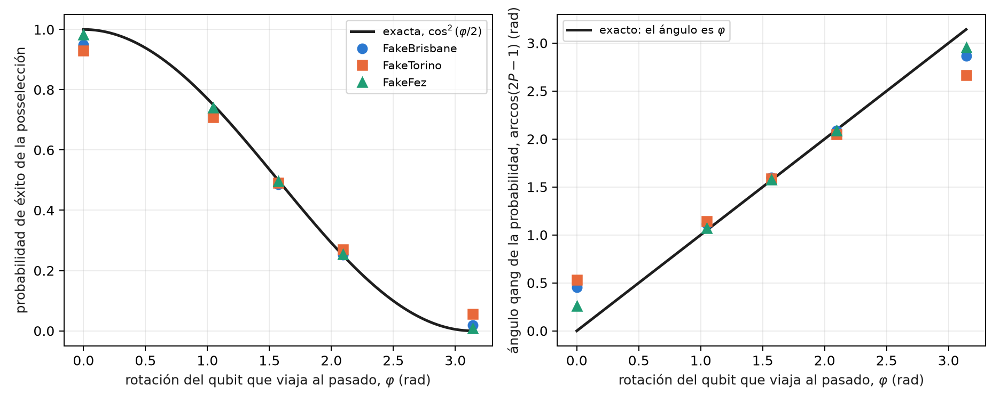
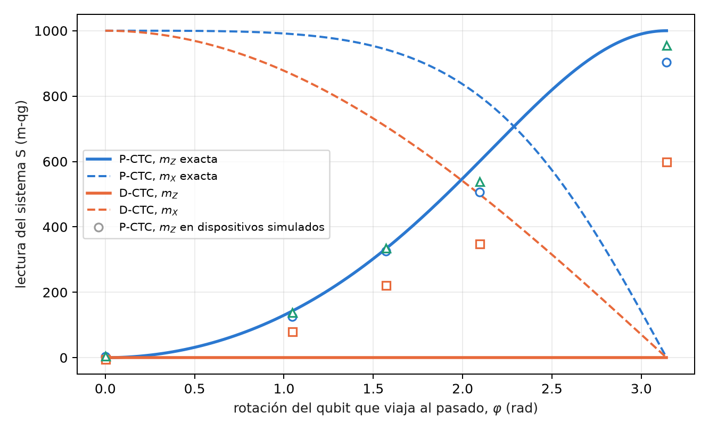
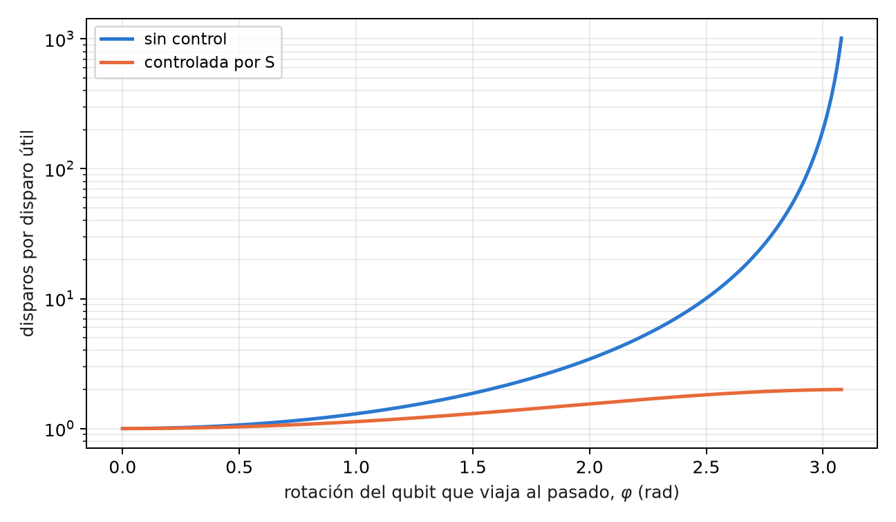

14 Curvas temporales cerradas posseleccionadas (P-CTC) y resolución de paradojas
La Parte V trata dos modelos de la teoría de la información que usan el vocabulario de la relatividad: los bucles temporales y la evaporación de agujeros negros. Conviene decirlo desde el principio: son modelos de teoría de la información, no afirmaciones sobre el espacio-tiempo (§164). Los dos son teleportación con posselección sobre un resultado de Bell, es decir, un filtro sobre el sector de Bell, y por eso entran en este libro. Este capítulo trata el bucle temporal en las dos formulaciones conocidas, la posseleccionada (P-CTC) y la de Deutsch (D-CTC), y lo que una lectura qg distingue entre ellas.
14.1 Desde la base: la probabilidad de éxito tiene ángulo qang \(\varphi\)
En el modelo más simple, el qubit que “viaja al pasado” sufre una rotación \(R_X(\varphi)\), y la posselección tiene éxito con probabilidad
\[ P_{\text{éxito}}=\cos^2\frac{\varphi}{2}. \]
Es la ecuación de probabilidad del capítulo 1 con \(p_0=P_{\text{éxito}}\), de modo que su ángulo qang es exactamente la rotación, \(\arccos(2P-1)=\varphi\), su lectura es \(m=1000\cos\varphi\), y la tasa de éxito medida con \(N\) intentos da \(\varphi\) con incertidumbre \(1/\sqrt N\). La paradoja del abuelo, \(\varphi=\pi\), está en el polo sur: \(P=0\), \(m=-1000\).
14.2 Dos maneras de cerrar un bucle temporal
Deutsch (D-CTC, 1991). (Deutsch 1991) El sistema en el bucle tiene que ser consistente consigo mismo: su estado \(\rho_C\) es un punto fijo de la evolución, \(\rho_C=\operatorname{Tr}_S[U(\rho_S\otimes\rho_C)U^\dagger]\). Siempre existe al menos un punto fijo, de modo que nunca hay paradoja, pero puede haber varios, y hace falta una regla adicional para elegir; la habitual es tomar el de máxima entropía.
Posselección (P-CTC; Bennett y Svetlichny, Lloyd y colaboradores, 2011). (Svetlichny 2011; Lloyd et al. 2011) El qubit que viaja al pasado, \(C\), es la mitad de un par de Bell \((C,A)\). Después de que \(C\) interactúa con el sistema \(S\), se proyecta \((C,A)\) otra vez sobre el estado de Bell: es una teleportación de \(C\) hacia su propio pasado, con la medición de Bell forzada a su resultado trivial. La evolución efectiva de \(S\) es
\[ \rho_S\mapsto\frac{\operatorname{Tr}_C(U)\,\rho_S\,\operatorname{Tr}_C(U)^\dagger}{\operatorname{Tr}[\ldots]}, \]
que no es lineal por la normalización. En el circuito, la proyección es una medición de Bell y quedarse con los disparos que dan 00: un filtro sobre el sector de Bell.
14.3 La ley de éxito y la paradoja del abuelo
Con \(R_X(\varphi)\) sobre \(C\) solo, \(\operatorname{Tr}_C(U)=\operatorname{Tr}R_X(\varphi)/2=\cos(\varphi/2)\), y el éxito es \(\cos^2(\varphi/2)\). En \(\varphi=\pi\) el qubit invierte su propio pasado: es la paradoja del abuelo, y en P-CTC tiene probabilidad cero. No se resuelve: no ocurre. En D-CTC el mismo caso tiene como punto fijo el estado máximamente mezclado, y ocurre con probabilidad 1, como una moneda.
En tres modelos de ruido simulados, con 8000 disparos (§164), la ley de éxito se cumple dentro de 0,05 salvo en \(\varphi=0\) en dos dispositivos (C1 falló: 0,950 y 0,931 contra 1), y la paradoja queda suprimida hasta el piso de ruido en dos de tres (C2 falló en FakeTorino):
| dispositivo simulado | éxito en \(\varphi=0\) (exacto 1) | éxito en \(\varphi=\pi\), la paradoja (exacto 0) |
|---|---|---|
| FakeBrisbane | 0,950 | 0,019 |
| FakeTorino | 0,931 | 0,056 |
| FakeFez | 0,983 | 0,009 |

La Figura 14.1 muestra algo propio de la lectura en ángulo. En el interior, el ángulo qang de la tasa medida reproduce \(\varphi\) a pocos centésimos de radián; en los polos se aparta hasta medio radián. Es la no linealidad del mili-qang en ángulo del capítulo 1: junto al polo, 1 m-qg son 2,56°, y los 34–138 m-qg de error de los dispositivos en \(\varphi=0\) se vuelven 0,26–0,53 rad.
14.4 La rotación controlada por el sistema
Si es el sistema \(S\) el que controla la rotación de \(C\), la traza parcial es un operador sobre \(S\):
\[ \operatorname{Tr}_C(U)=\operatorname{diag}\!\left(1,\ \cos\tfrac{\varphi}{2}\right), \]
y la rama de \(S\) que produciría la paradoja queda atenuada por \(c=\cos(\varphi/2)\). Desde \(|+\rangle\), el estado posseleccionado de \(S\) tiene
\[ qg_Z(S)=\frac{1-c^2}{1+c^2},\qquad qg_X(S)=\frac{2c}{1+c^2}, \]
con éxito \((1+c^2)/2\). En \(\varphi=\pi\), \(qg_Z(S)=1\): el sistema queda forzado a la rama que no invierte el pasado. En los modelos simulados, FakeFez sigue la curva a 0,061 en todo el rango, FakeBrisbane lee 0,903 en \(\varphi=\pi\), y FakeTorino pierde la mayor parte de la supresión (0,600): la predicción C3 falló.
14.5 Lo que una lectura qg distingue entre D-CTC y P-CTC
Esta sección es nueva en el libro: es álgebra exacta de matrices densidad, calculada en el script de figuras, sin corrida en dispositivos. Se toma el mismo circuito controlado, con \(S\) en \(|+\rangle\), y se calcula la salida de \(S\) en las dos formulaciones.
En D-CTC, el canal sobre \(C\) es \(\rho_C\mapsto\tfrac12\rho_C+\tfrac12R_X\rho_CR_X^\dagger\), y es punto fijo todo estado que conmute con \(R_X(\varphi)\). Con la regla de máxima entropía, \(\rho_C=I/2\), y la salida de \(S\) es
\[ qg_Z(S)=0,\qquad qg_X(S)=\cos\frac{\varphi}{2},\qquad r=\cos\frac{\varphi}{2}. \]
Las dos formulaciones se separan en lecturas distintas (Figura 14.2):
| \(\varphi\) | P-CTC: \(m_Z\), \(m_X\) (m-qg) | D-CTC: \(m_Z\), \(m_X\) (m-qg) | éxito P-CTC |
|---|---|---|---|
| 0 | 0, 1000 | 0, 1000 | 1 |
| \(\pi/3\) | 143, 990 | 0, 866 | 0,875 |
| \(\pi/2\) | 333, 943 | 0, 707 | 0,750 |
| \(2\pi/3\) | 600, 800 | 0, 500 | 0,625 |
| \(\pi\) | 1000, 0 | 0, 0 | 0,500 |

La diferencia es cualitativa. P-CTC cambia las poblaciones de \(S\) (la rama paradójica pierde peso) y deja un estado puro; D-CTC no toca las poblaciones y sólo le quita coherencia. Una lectura en \(Z\) de \(S\) ya decide entre los dos modelos, y los dispositivos simulados, con todo su ruido, están del lado de P-CTC, como debe ser, porque el circuito es el de P-CTC.
La ambigüedad de Deutsch también se lee. Con \(\varphi=\pi/2\), el estado \(|+\rangle\) también es punto fijo, y da la misma \(qg_Z(S)=0\) y la misma \(qg_X(S)=0{,}707\), pero \(qg_Y(S)=-0{,}707\) y radio 1, contra \(qg_Y=0\) y radio 0,707 con \(I/2\). Las dos soluciones de D-CTC difieren en el radio local del capítulo 5: la regla de máxima entropía elige el punto fijo que deja a \(S\) más mezclado.
14.6 El costo de la posselección
“Viajar en el tiempo” en este modelo cuesta disparos. Cada disparo útil exige, en promedio, \(1/P_{\text{éxito}}\) disparos: 2 en \(\varphi=\pi/2\), 4 en \(2\pi/3\), 400 a una décima de radián de la paradoja (Figura 14.3). Con la rotación controlada el costo nunca pasa de 2, porque la mitad de la superposición de \(S\) no paga nada. Es la misma cuenta que el filtro de sector de los capítulos anteriores, con una diferencia: aquí la fracción descartada no es ruido sino la física del modelo, y no se puede reducir.

14.7 Lo que queda pendiente
Dos temas del índice no tienen todavía respaldo y quedan como propuestas: la no linealidad de las P-CTC aplicada a discriminar estados no ortogonales (falta el circuito y la predicción), y una corrida de la comparación D-CTC frente a P-CTC en dispositivos, que exigiría preparar el punto fijo de Deutsch y no sólo posseleccionar.
14.8 Sin qang y con qang
| acción | sin qang | con qang | diferencia |
|---|---|---|---|
| leer la rotación del bucle | invertir \(\cos^2(\varphi/2)\) | el ángulo qang de la tasa de éxito es \(\varphi\), con \(\sigma=1/\sqrt N\) | equivalente en el interior; en los polos la lectura en ángulo amplifica el error (34–138 m-qg se vuelven 0,26–0,53 rad), y eso cuenta en contra |
| verificar la supresión de la paradoja | probabilidad de éxito y estado de S por tomografía | \(m_Z(S)\): 903, 600 y 955 m-qg contra 1000 | unidad; la supresión es de la posselección |
| distinguir D-CTC de P-CTC | comparar matrices densidad | P-CTC mueve \(m_Z\); D-CTC no lo mueve y baja \(m_X\) | a favor: una sola lectura en \(Z\) decide el modelo |
| distinguir los puntos fijos de D-CTC | entropía de cada solución | el radio local del capítulo 5: 0,707 frente a 1 | a favor: la ambigüedad se vuelve una lectura |
| reducir el ruido | — | la posselección es el filtro; la escala qang no agrega nada | ninguna |
Balance. En este capítulo qang rinde como herramienta de diagnóstico: dice con una o dos lecturas qué modelo de bucle está operando y cuál de las soluciones de Deutsch se eligió. La ley de éxito es la ecuación de probabilidad del capítulo 1, y con ella vienen también sus límites junto a los polos.
14.9 En código
import math
from qang import postselection as ps
ps.pctc_success(2 * math.pi / 3) # 0.25: éxito de la posselección
math.acos(2 * ps.pctc_success(2.0) - 1) # 2.0: el ángulo qang es la rotación
ps.pctc_controlled_qg_z(math.pi) # 1.0: la rama paradójica, suprimida
qc = ps.pctc_circuit(math.pi, controlled=True) # S, C, A; éxito = C y A leen 014.10 Resumen
- Los bucles temporales de este capítulo son modelos de información: teleportación con posselección sobre un resultado de Bell.
- En P-CTC, la probabilidad de éxito es \(\cos^2(\varphi/2)\) y su ángulo qang es \(\varphi\); la paradoja del abuelo tiene probabilidad cero y, en dos de tres modelos simulados, queda en el piso de ruido.
- Con la rotación controlada, \(qg_Z(S)=(1-c^2)/(1+c^2)\): la rama paradójica se suprime; FakeTorino pierde la mayor parte de la supresión.
- D-CTC no cambia las poblaciones de S y sólo le quita coherencia; una lectura en \(Z\) separa los dos modelos, y el radio local separa los puntos fijos de Deutsch.
- La posselección cuesta \(1/P\) disparos por disparo útil; es física del modelo, no ruido, y no se reduce.
Notas bibliográficas
El modelo autoconsistente de curvas temporales cerradas es Deutsch (1991); el modelo por posselección y su prueba experimental, Lloyd et al. (2011), y la comparación entre ambos, Svetlichny (2011). Las notas de investigación numeradas (§) que cita el capítulo y los scripts que lo verifican están en el repositorio (Monteverde 2026a); la definición de la unidad qang, en Monteverde (2026b).